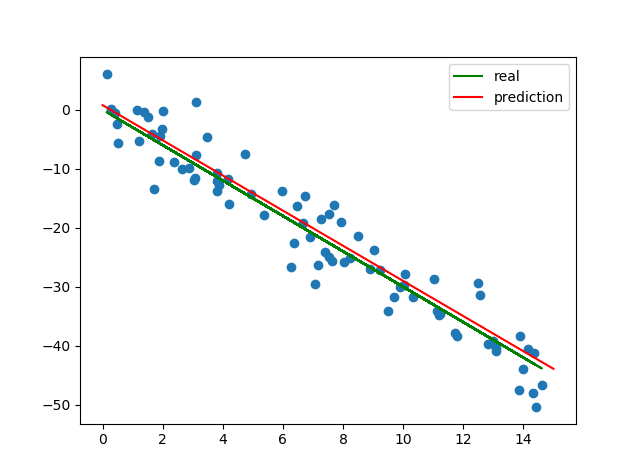

这里用的是 tf 底层 API，先导入所需要的包，并设置好一些超参数
import numpy as np
import matplotlib.pyplot as plt
import tensorflow as tf
LEARNING_RATE = 0.001
EPOCHES = 200
BATCH_SIZE = 10
然后自己生成随机数据点，用以稍后的训练，顺便把数据点先画好
HOW_MANY = 80 # 数据点个数
true_w = int(np.random.randn() * 7)
true_b = int(np.random.randn() * 4)
# 真正的 w 与 b，为了方便比对，均取整
train_X = np.random.rand(HOW_MANY) * 15
noise = np.random.randn(HOW_MANY) * 3.5 # 随机噪音，有正有负
train_Y = true_w * train_X + true_b + noise
plt.plot(train_X, train_Y, 'o')
plt.plot(train_X, train_Y - noise, 'g', label='real')
print('generate successfully')
设置所需节点
X = tf.placeholder(tf.float32)
Y = tf.placeholder(tf.float32)
w = tf.Variable(tf.zeros(()))
b = tf.Variable(tf.zeros(())) # w and b are all scalars
设置模型（线性）和 loss function、optimizer
pred = w * X + b
loss = tf.reduce_sum((Y - pred) ** 2)
optimizer = tf.train.GradientDescentOptimizer(LEARNING_RATE).minimize(loss)
初始化 Variables
with tf.Session() as sess:
sess.run(tf.global_variables_initializer())
分批投喂数据进行训练
# 仍在 with 里边
for i in range(EPOCHES):
for batch in range(0, HOW_MANY, BATCH_SIZE):
sess.run(optimizer, feed_dict={X: train_X[batch:batch+BATCH_SIZE], Y: train_Y[batch:batch+BATCH_SIZE]})
if (i+1) % 5 == 0:
print('Epoch #{}, loss = {}'.format(i+1, sess.run(loss, feed_dict={X: train_X, Y: train_Y})))
训练完成，输出相关信息，完成图表并展示
# 仍在 with 里边
print('Trained successfully.')
print('true_w = {}, true_b = {}'.format(true_w, true_b))
print('pred_w = {}, pred_b = {}'.format(w.eval(), b.eval()))
_x = np.linspace(0, 15)
_y = w.eval() * _x + b.eval()
plt.plot(_x, _y.T, 'r', label='prediction')
plt.show()
如果学习率设置得太高，可能会导致在 Optimizer 找到合适方向前，loss function 的值就已经爆表了，最后得到的 w 跟 b 都是 NaN。所以比较稳妥的方法是，减小学习率，增加训练次数。
Update: 对于随机梯度下降来说，Tensorflow 会自动记录节点的运算规则并求导，不存在“找不到合适方向”的情况。不过如果
loss function越来越高的话，基本都是由于学习率过高，不断跨过沟底。同时，沟壁的梯度（一般）越远离极小值点则越大（所以更新的步伐也越来越大），最终造成loss function的值越来越离谱。
试着跑了一下，能得到如下输出：
true_w = -3, true_b = 0
pred_w = -2.9783382415771484, pred_b = 0.7763855457305908
